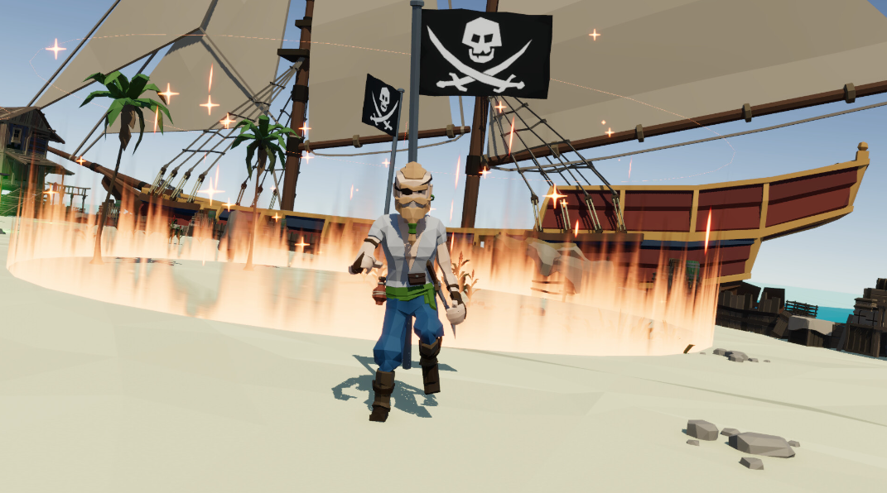
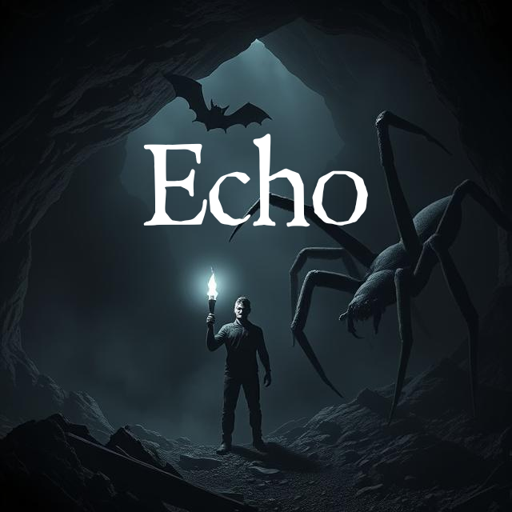
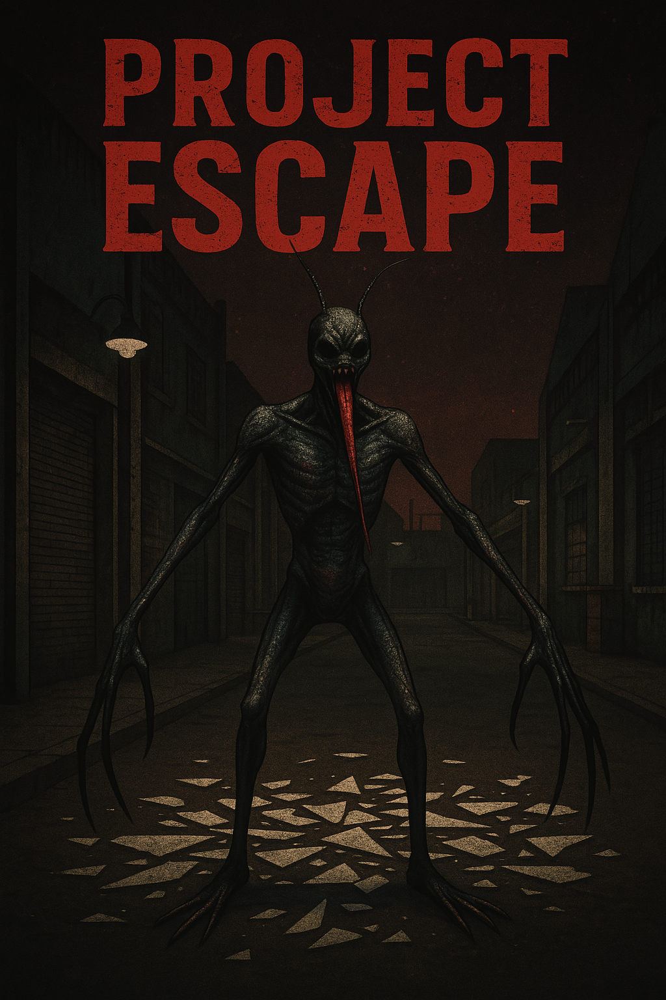

My Projects
Chained 2 Violence
Bound by an unbreakable chain, you and a partner must survive waves of enemies in evolving arenas.
Coming to Steam!
Learn MoreEcho
Use your voice to help your Bat companion reveal the darkness. One player makes sounds, the other sees the echoes — together, you must navigate the cave and avoid the lurking spiders.
Learn MoreProject Escape
Avoid the monster that lurks in the area, escape is your only option...
Learn More